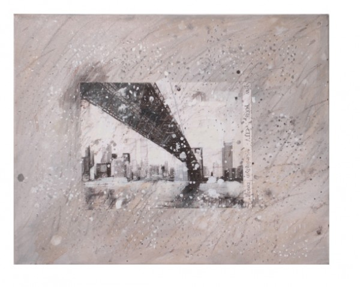

-
Relational Affectives: “Geography” at the Rooster Gallery
by Laila Pedro November 3, 2010
Rooster is a charming little gallery, barely two weeks old, on that strip of Orchard street just below Houston that still occasionally shows up in writing as the “new” locus of hip young art, heroically opposing the boom-driven, testosterone-inflected, big-money jackhammer of the Chelsea and Meatpacking districts. (57th Street seems barely to warrant a mention these days.) I am generally suspicious of such binaries, but I suppose Rooster may in fact be what it wants to be seen as, a place where, as one writer has it, “as happened in the seventies, and after the early-eighties crash, and again after the early nineties crash, a new crop of creative entrepreneurs are entering the scene.” In New York we see mini-movements everywhere. Locked within a post-Warholian economy that turns less on the metaphysical identification of the current, fifteen minute thing than on the slow movement of such claims across magazines, blogs, journals and suitably loosened lips, we find the scene has become spatial as well as temporal. In contemporary New York, every person or place will be famous for fifteen minutes at fifteen different moments in fifteen different discursive spaces.
So whether what is going on in the Bowery/LES is an actual, social-artistic “movement,” the soi-disant natural pattern of gentrification, just starting, already over, distinctly commercial, categorically resistant or some combination thereof depends entirely on what card you carry and which internet you read. And, of course, everybody is right. The only real inevitability is a historical comparison with the ever more mythic past, a trope on which business-savvy gallery owners have never failed to capitalize.
Leaving aside any art-scene contextualizing, Rooster’s current, and inaugural, exhibition, Geography of Affection: 6 Portuguese Artists in New York is carefully curated, and, though uneven, quite effective. It’s a mixed-media show, letting each artist shine while still maintaining a chaotic unity. This is highlighted by the gallery space itself—the first floor is Lower East Side white-box-tiny, and half of the show is located in the basement down a vertiginous, if Lilliputian, spiral staircase. The geography of the title is not incidental—the gallery owners have found a solid niche with their intention to “organize an annual exhibition of new Portuguese artists, who….decided to make this city their own.” Parallel to this runs the assertion that “in new geographies, affection measures the distance.” This location-based affect of relation is compelling, especially in the context of New York, where so many streams merge in and out of one another. Focusing on one of these- the Portuguese origin, in this case – the exhibition elicits a precise emotional response, tracing out the timbre of a geographically bracketed nostalgia (or, more apropos, a saudades).
This is complemented by the diversity of genre and medium, both between the works and within them. Carlos Roque’s digital print Mundo Moderno no. 2 is a good example of this confluence: a jumble of precise, draftsman-like drawing, overlaid with varieties of text—graffiti-style, signage, and so forth—presented in both anterior and mirror image, so you’re never quite sure of how deep the work wants to take you, dimensionally speaking. Sharp lines thrusting at various angles through the frame, and variously scaled vehicles add a dimension of movement, and thus, also, of time, to the assemblage of directions. It’s like crossing Houston Street—seemingly a straightforward proposition, but in actuality a jumble of direction and movement that undermines any fixed perspective. Its strengths are those of the exhibition as a whole—an engagement with depth, form and genre that is ultimately as playful as it is sentimental (French inflection, having to do with deep feeling, rather than the English, maudlin).
More delicate, though no less effective, is Isabel Pavão’s Brooklyn Bridge Series. The postcard image captures the bridge, in an epically-scaled and -angled sweep, from below, playing with its iconography. The bridge’s monumental span and ironclad iconography are softened by an overlay of whites, blacks and warm grays (with a very few Pollockesque drips), and framed by text that reads, “NEW YORK CITY the brooklyn bridge.” The three photographs aren’t measurably different (I don’t think), but something about the variation in tonalities of gray splashed across it makes each image emotionally unique. It feels like the same image seen three times through the same camera on a rainy day at three minute intervals. Again, the sense of space is displaced by an engagement with mixed media, and, in this case, by the sly use of text as frame-within-frame, which remakes a postcard, the tangible incarnation of an outsider’s place-memory, into an object of commentary, before finally transforming it into something else entirely.
Directly opposite the Brooklyn Bridge Series in its position in the gallery is Teresa Henriques’ installation Cynicism/Anxiety. While its sculptural shaping, simplicity and intimate scale are beautiful, and instantly put me in mind of Man Ray’s Object to be Destroyed / Indestructible Object series, the best thing about the work is its sound. It makes a sort of gentle whirring that is surprisingly suggestive, forcing our engagement across multiple sensory levels, without being aggressive, only strangely, soothingly, imperturbable. This soft quality, which invites emotion without bullying the viewer into a response, is what characterizes Geography of Affection: it’s evocative without being manipulative, earnest without being trite. To be sure, some pieces are less successful than others, and some don’t particularly work as parts added to the sum of the show, but the exhibition is solid enough to withstand this, calmly whirring along.